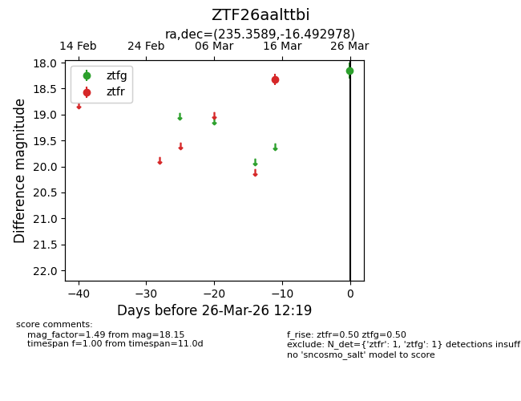
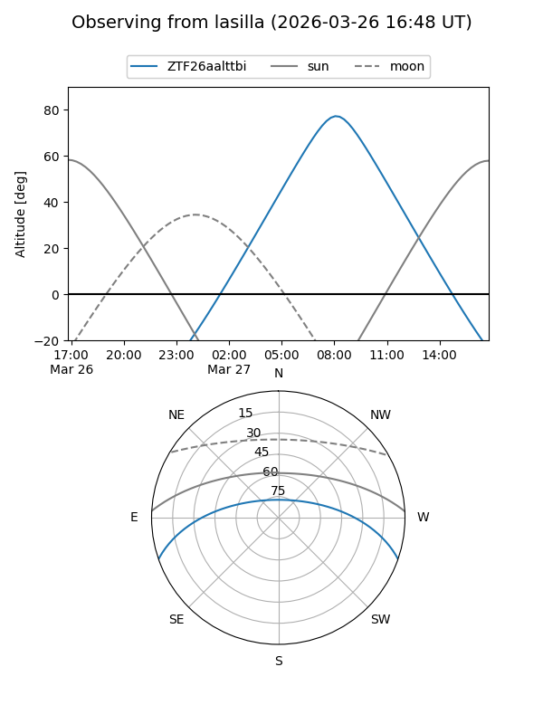
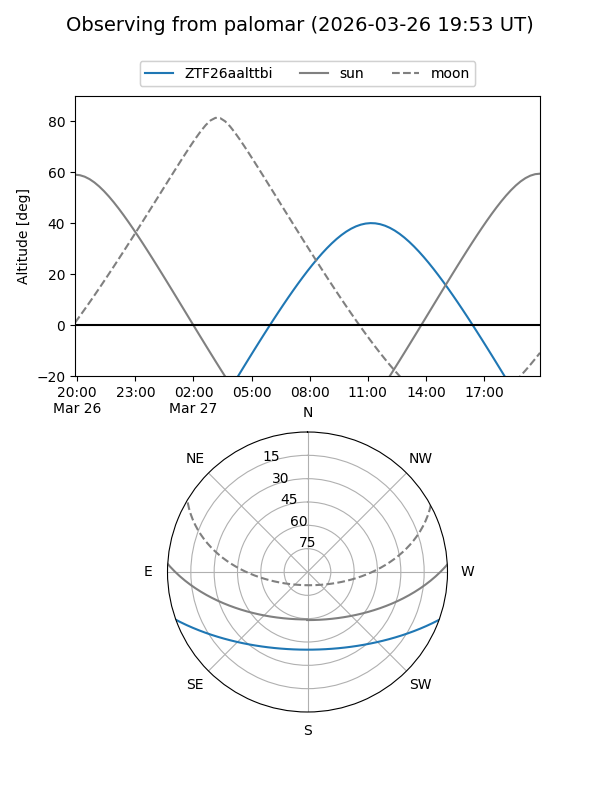

ZTF26aalttbi
Target ZTF26aalttbi at 2026-03-26 12:21
Aliases and brokers:
FINK: link
Lasair: link
ALeRCE: link
alt names
ZTF26aalttbi (ztf,fink_ztf)
Coordinates:
equatorial (ra, dec) = 235.3589,-16.49298
equatorial (HMS+DMS) = 15:41:26.13,-16:29:34.72
galactic (l, b) = (351.3373,+29.98166)
Flags:
Photometry:
last ztfg=18.15, ztfr=18.32
1 ztfg, 1 ztfr detections
Lightcurve

Visibility


Additional plots